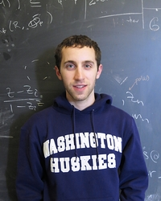
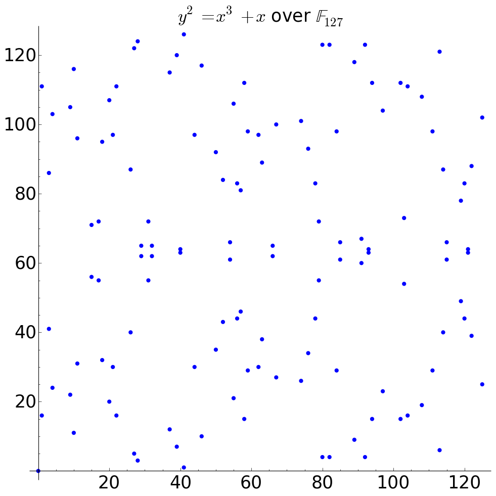
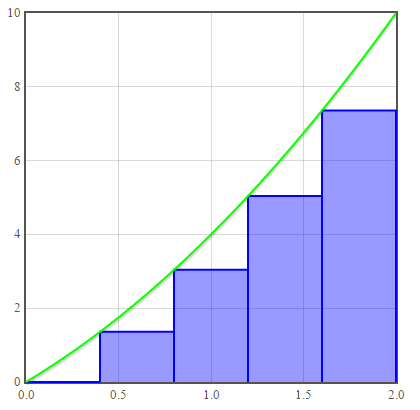

About
I am a fifth year PhD student in number theory. My advisor is Neal Koblitz. Much of my research centers on finding parameters for elliptic curve cryptosystems with special properties.
Interests
- Elliptic curve cryptography
- Computational Algebraic Number Theory
Teaching
Contact
{kind=link}
Publications
- Isolated elliptic curves and the MOV attack. Journal of Mathematical Cryptology. To Appear 2017.
- Super-Isolated Elliptic Curves and Abelian Surfaces in Cryptography. Submitted.
Outreach
AWM
I am a member of the University of Washington chapter of the Association for Women in Mathematics. I fully support equality in STEM fields.
WXML
The Washington Experimental Math Lab is an oppurtunity for teams of undergraduates to work on a project in math research with graduate student and faculty mentors. I have mentored the following projects.
-
Fall 2017: Rational Points on Curves
Learn about diophantine equations such as Pell's equation and Thue equations. Solutions to these equations have algebraic, analytic, and geometric interpretations. The goal of the project is to eventually search for rational points on higher genus curves (with genus at least 2). The results of the search will be compared with the uniformity conjecture.
-
Spring 2017: Atkin-Goldwasser-Kilian elliptic Curve Primality Test
Implement the elliptic curve primality test (which requires an implementation of Schoof's point counting algorithm on curves over finite rings) and compare timings with the previous primality tests. This requires learning some background on elliptic curve arithmetic.
-
Winter 2017: Agrawal–Kayal–Saxena primality Test
Implement the AKS primliaty test in Sage. Compare timings against brute force and standard probabilistic primality tests.
-
Fall 2016: Experimental Evidence for the Bateman-Horn Conjecture
Use Sage to gather evidence for the Bateman-Horn conjecture which gives an asymptotic density for how often a finite set of polynomials takes on prime values.
-
Spring 2016: Wikipedia Taskforce
Contribute sequences to The On-Line Encyclopedia of Integer Sequences® (OEIS®) database and new images of graphs to wikipedia articles.
Math Day
Math Day is an event for over a thousand high school students to come to UW and see some lectures about math/science. I have volunteered at Math Day the past four years. The past three years I have led the Sage workshop, which gives students a chance to explore programming and math. I have written my own cryptography focused worksheet so that they can also be exposed to some math behind modern cryptography.
Julia Robinson Math Festival
The Julia Robinson Math Festival is an event for elementary through high school students to visit UW and explore math. I have volunteered at the festival the past three years.
Employment
Teaching Assistant/Instructor University of Washington (2013 - present)
As a teaching assitant, I grade exams, lead quiz sections, and hold office hours. I also teach my own classes where I am responsible for writing exams and assigning final grades.
Web Developer, University of Washington (2015-2017)
Lead developer, project manager, product designer, graphic designer, UI/UX developer, quality assurance, and support for Hamstr: an online math homework system. https://hamstr.org
Contract Web Designer (2013-2016)
I helped build and redesign websites for professors in math education at Virginia Tech, University California at San Diego, and Portland State University. This included rewriting HTML and CSS as well as implementing discussion boards and user accounts in PHP.
Math Librarian, University of Oregon (2012-2013)
I worked in the Math Library at the University of Oregon during as an undergraduate. I learned about library systems as well as helped tutor student in math.
Pictures
Elliptic Curve
Riemann Sums
Abby